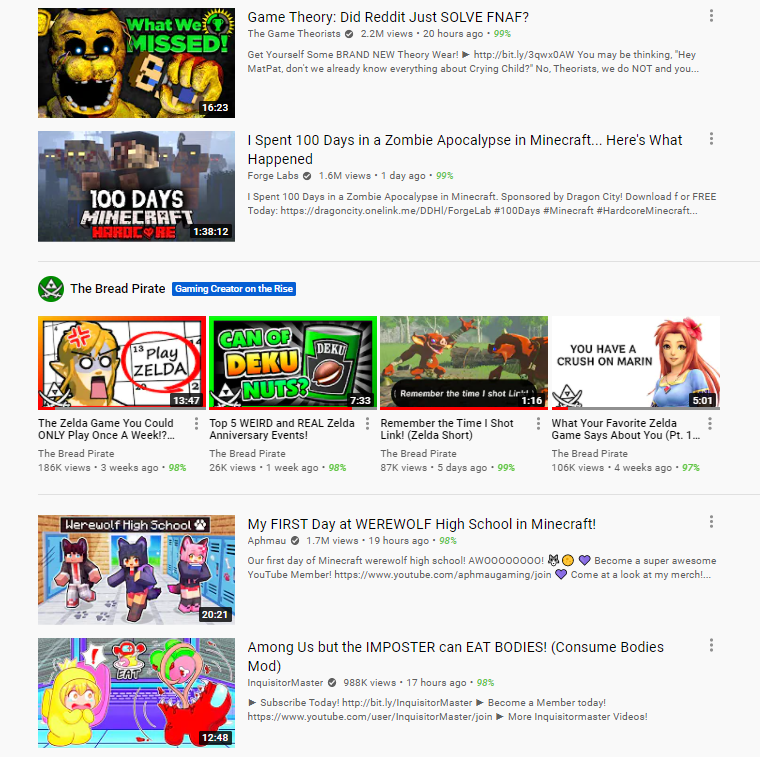

Timeline of The Bread Pirate
Last Updated : March 18th, 2023
2000
2010
"This channel featured me, my brother, and my sister. We filmed several skits using a webcam on our old laptop, and it was about as professional as you’d expect from a 10 year old.
Still, we had fun with it and that's all that matters. I also got experience being a director."

2011 & 2012
I made 7 videos during this time. Most of them are unwatchable by today's standards (and by the standards of 2011-2012 if I'm entirely honest).
Anyways... here's a picture with my sister, my brother, and me on the right.

2013
That announcement video honestly wasn't very informative. XD
Originally, I wanted to make the new channel with my brother and call it "RosterBros," but my brother declined so I made the channel by myself and called it "Sitludo" instead.
Dude... imagine the alternate timeline where my brother and me actually created RosterBros though. The world would be completely different.
This was my first gaming channel! The name Sitludo was chosen since I thought it was latin for “The Game.” Unfortunately, the nameconfused viewers and attracted an odd amount of spanish people.
2015
The video was about Neo Mario Galaxy, a mod for Super Mario Galaxy by Aurum. The mod still exists today and can be downloaded for the Wii or Wii U.
I was really proud of this video. The price of Almond Jell is still my favorite number!
Burton is my real name, Wester is a made up name, and I used the title Major since I thought it sounded cool.
The Legend of Pirates Online (TLOPO) is a fan project to remake Pirates of the Carribean Online. I was super invested in the project when it started. They are still active today!
TLOPO Everything was a collaborative channel for TLOPO content creators. When you joined, you had to agree to ONLY upload your TLOPO videos there. Kind of rough…
The channel died a few years later and was refurbished into a Fornite channel by one of its members.
I left after a few months since the game had a lack of updates.
This was the last episode since I got burnt out by how long the game was. The let’s play spanned 2 full years which is the longest I have ever done.
2016
This was my attempt to predict Breath of the Wild’s name. The idea was inspired by Zeltik’s channel and I even mention him at the end of the video.
I was eager to ditch Major Burton Wester since I thought the channel was unpolished and the name made no sense. My plan was to make a new channel where I could do 1-Life challenges, but that idea fell though.
In the end, the channel became a random hodgepodge of topics from Zelda to The Princess Bride and even homework.
It was my first video with multiple thousand views. For years it was unlisted since I was unhappy with it, but I made it public again in 2021.
2017
Whew… this one will take a while to explain. I’ll be brief.
In 2017, I joined the Fallout New Vegas Multiplayer community and had to choose a faction. You could choose from more than a dozen groups, each with their own Discord server and government. I chose The Enclave since I thought they were cool (even though they are technically evil in the lore).
Then, after a few weeks I made "Enclave News Network" (ENN) which was a parody of Enclave Radio. I made videos about Fallout Multiplayer news and propaganda related to The Enclave. Basically it was roleplay! It was a blast but the community died only 5 months after I joined.
I honestly should make a video about it someday. The faction system was super unique and I have a lot of stories about it.
This was a collaborative channel made with two friends from high school. We planned to take turns uploading 1 video each week, but I was the only person who uploaded stuff.
Fun Fact: As a joke, we put two typos in the name. "Inquisition" was spelt with a lowercase L at the beginning, and "Llama Bean"s second letter was an uppercase i.
Because the lowercase L and uppercase i are only a pixel different, nobody could tell the difference. (FYI, Do not do that with your username. It makes it a nightmare to search usernames when they have typos. Please, for the love of all things good and holy, don't do it.)
And in case you're curious... yes. I spelled the name like that in this timeline.
Anyways, because I was the only person posting videos it slowly turned into my personal gaming channel.
2018
The channel was renamed The Bread Pirate Gaming and became my place for gaming content.
2019
This was made as a proof of concept. I wanted to do tons of machinimas, but that proved to be too ambitious.
I was the first person to make a Let’s Play for this infamous BotW mod. At the time it was my best let’s play series (and in some ways it still is).
2020
🎈 100 Subs for the First Time 🎉 - Apr 19
My other channel was then renamed, The Bread Pirate Live-Action since it had lots of skits. (And in 2021 I renamed it Burton Brewster since it was easier to remember.)
It’s confusing, I know.
(Cough…) criminally underrated (...Cough)
This caused my Relics of the Past videos to spike in views!
500 Subs - Sep 7
2021
Zeldom had 5,000 subs at the time, so this gave my channel a big boost in views!
Thanks to the collab with Zeldom, the channel snowballed! In a month I went from 1,000 Subs to 18,000 subs.
On the 35th Anniversary of the Zelda Series (February 21st, 2021) YouTube featured my channel as the "Gaming Creator on the Rise." This gave my channel a HUGE boost in views and subscribers for 24 hours! (And makes for cool bragging rights.) 
Took months to make, but it was very eduational for me. I learned how to do indepth research and how to edit longer videos. I also got to voice chat with Zeltik for an hour which is a feat in itself.
This started my second spike in views.
On June 10th I was at 19k Subscribers...
and by July 10th I had 37k Subscribers.
2022
I learned coding through a college class on web design and used this website as my final project.
I might have gone a little overboard.
The Future...
Right now, I focus on facts about The Legend of Zelda series, and I plan to continue that for the foreseeable future. However, I also want to dip my toes into let's playing again and vlogging.
Wish me luck!